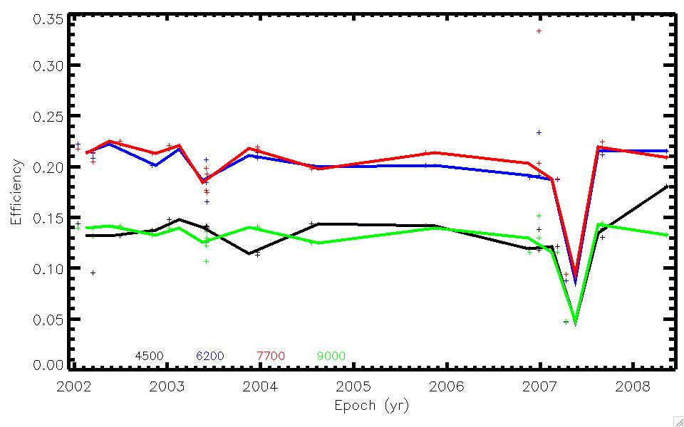

Current ZP and Efficiency Curves


ESI ECH Throughput Measurements |
| Summary |
| Date | Standard | RA (J2000) | DEC (J2000) | Grating | Slit | Airmass | Conditions | Figures | Tables |
|---|---|---|---|---|---|---|---|---|---|
| 15JAN2002 | G191B2B | 05:05:30.57 | +52:49:56.5 | ECH | 6.00 | 1.41 | ZP_pix ZP_Ang Efficiency | ZP_pix ZP_Ang Efficiency | |
| 15MAR2002 | HZ_44 | 13:23:33.90 | +36:07:42.6 | ECH | 6.00 | 1.49 | ZP_pix ZP_Ang Efficiency | ZP_pix ZP_Ang Efficiency | |
| 15MAR2002 | Feige34 | 10:39:36.69 | +43:06:09.9 | ECH | 6.00 | 1.09 | ZP_pix ZP_Ang Efficiency | ZP_pix ZP_Ang Efficiency | |
| 28JUN2002 | BD+28deg4211 | 21:51:11.09 | +28:51:52.0 | ECH | 6.00 | 1.30 | ZP_pix ZP_Ang Efficiency | ZP_pix ZP_Ang Efficiency | |
| 31OCT2002 | G191B2B | 05:05:30.60 | +52:49:54.0 | ECH | 6.00 | 1.22 | ZP_pix ZP_Ang Efficiency | ZP_pix ZP_Ang Efficiency | |
| 06JAN2003 | G191B2B | 05:05:30.61 | +52:49:54.0 | ECH | 6.00 | 1.19 | ZP_pix ZP_Ang Efficiency | ZP_pix ZP_Ang Efficiency | |
| 02JUN2003 | BD+33deg2642 | 15:51:59.89 | +32:56:55.0 | ECH | 6.00 | 1.04 | ZP_pix ZP_Ang Efficiency | ZP_pix ZP_Ang Efficiency | |
| 02JUN2003 | Feige110 | 23:19:58.39 | -05:09:56.0 | ECH | 6.00 | 1.33 | ZP_pix ZP_Ang Efficiency | ZP_pix ZP_Ang Efficiency | |
| 04JUN2003 | BD+28deg4211 | 21:51:11.10 | +28:51:52.0 | ECH | 6.00 | 1.01 | ZP_pix ZP_Ang Efficiency | ZP_pix ZP_Ang Efficiency | |
| 04JUN2003 | Feige110 | 23:19:58.40 | -05:09:56.0 | ECH | 6.00 | 1.22 | ZP_pix ZP_Ang Efficiency | ZP_pix ZP_Ang Efficiency | |
| 19DEC2003 | Feige110 | 23:19:58.40 | -05:09:56.0 | ECH | 6.00 | 1.17 | ZP_pix ZP_Ang Efficiency | ZP_pix ZP_Ang Efficiency | |
| 20DEC2003 | Feige110 | 23:19:58.40 | -05:09:56.0 | ECH | 6.00 | 1.14 | ZP_pix ZP_Ang Efficiency | ZP_pix ZP_Ang Efficiency | |
| 17JUL2004 | BD+33deg2642 | 15:51:59.86 | +32:56:54.8 | ECH | 6.00 | 1.03 | ZP_pix ZP_Ang Efficiency | ZP_pix ZP_Ang Efficiency | |
| 08OCT2005 | G191B2B | 05:05:30.62 | +52:49:54.0 | ECH | 6.00 | 1.23 | ZP_pix ZP_Ang Efficiency | ZP_pix ZP_Ang Efficiency | |
| 18NOV2006 | BD+28deg4211 | 21:51:11.09 | +28:51:52.0 | ECH | 6.00 | 1.02 | ZP_pix ZP_Ang Efficiency | ZP_pix ZP_Ang Efficiency | |
| 25DEC2006 | Feige110 | 23:19:58.29 | -05:09:56.0 | ECH | 6.00 | 1.16 | ZP_pix ZP_Ang Efficiency | ZP_pix ZP_Ang Efficiency | |
| 25DEC2006 | Feige34 | 10:39:37.60 | +43:06:21.0 | ECH | 6.00 | 1.18 | ZP_pix ZP_Ang Efficiency | ZP_pix ZP_Ang Efficiency | |
| 09MAR2007 | Feige34 | 10:39:36.70 | +43:06:10.0 | ECH | 6.00 | 1.09 | ZP_pix ZP_Ang Efficiency | ZP_pix ZP_Ang Efficiency | |
| 12APR2007 | BD+28deg4211 | 21:51:11.34 | +28:51:47.2 | ECH | 6.00 | 1.61 | ZP_pix ZP_Ang Efficiency | ZP_pix ZP_Ang Efficiency | |
| 31AUG2007 | Feige110 | 23:19:58.39 | -05:09:55.9 | ECH | 6.00 | 2.04 | ZP_pix ZP_Ang Efficiency | ZP_pix ZP_Ang Efficiency | |
| 31AUG2007 | Feige110 | 23:19:58.40 | -05:09:56.0 | ECH | 6.00 | 1.10 | ZP_pix ZP_Ang Efficiency | ZP_pix ZP_Ang Efficiency | |
| 08MAY2008 | Feige34 | 10:39:36.11 | +43:06:12.5 | ECH | 6.00 | 1.09 | ZP_pix ZP_Ang Efficiency | ZP_pix ZP_Ang Efficiency |
|
The above table summarizes the set of standard stars that have
been processed. They should have all been observed in photometric
conditions. You may note, however, that the slitwidth and airmass
vary consdierably. The efficiency calculations have made an estimated
correction for the airmass, but NO correction for slit losses. If you have a standard star to contribute, please contact the Keck staff or JXP. Here is a summary of the standards observed: |
|
Current ZP and Efficiency Curves |
| The following figures show the most recent measurements of the ZeroPoint and efficiency measurements observed through a sufficiently large slit (usually >2 arcsec). |
| |
| |
Time Evolution |
| The following figure shows the time history of the total efficiency (telescopes + instrument) evaluated at a few wavelenths as a function of time. Note that this analysis is restricted to wider slits. |
|  |